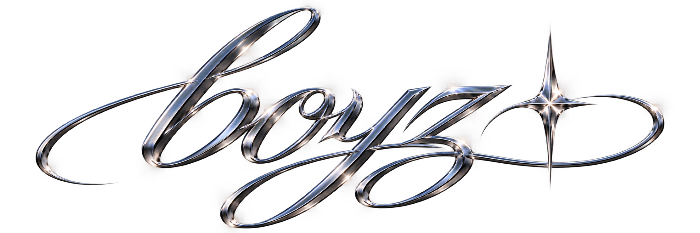
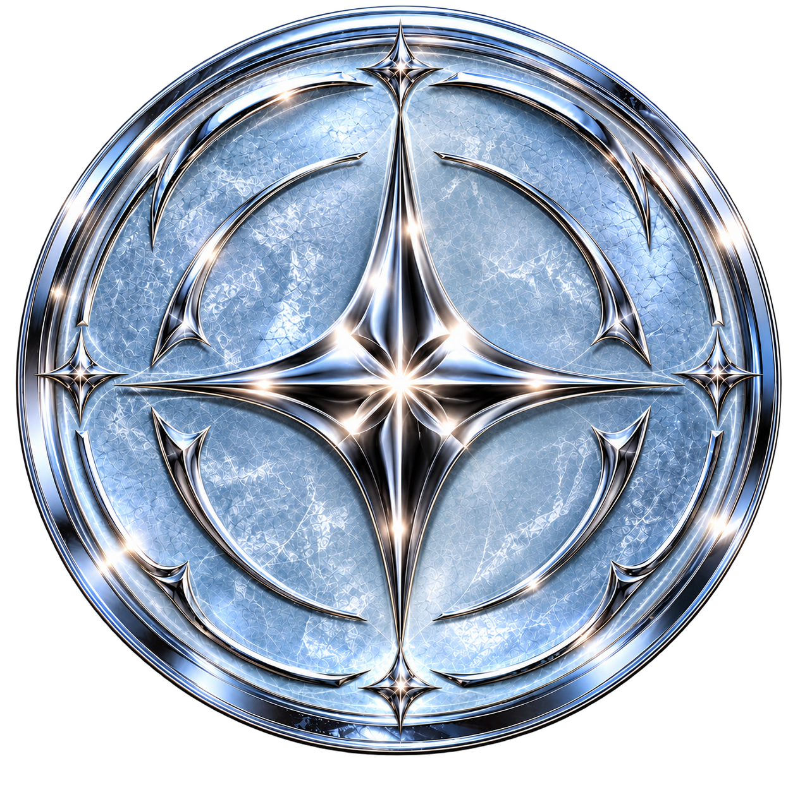
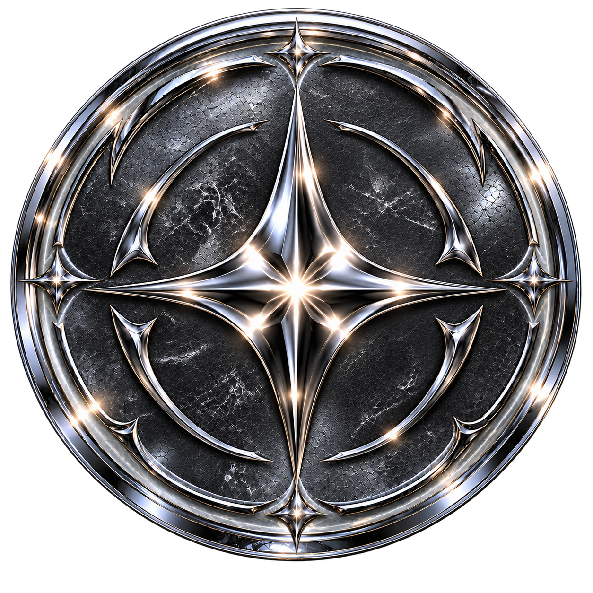
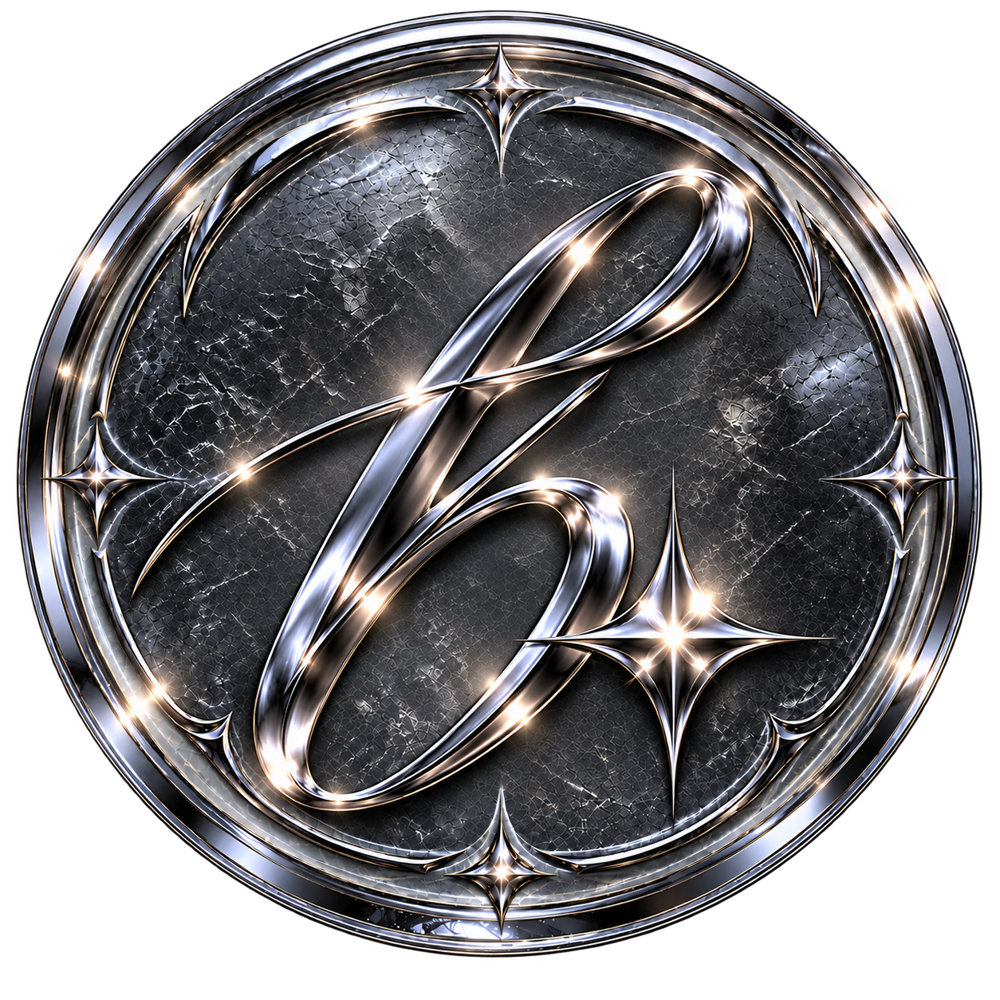
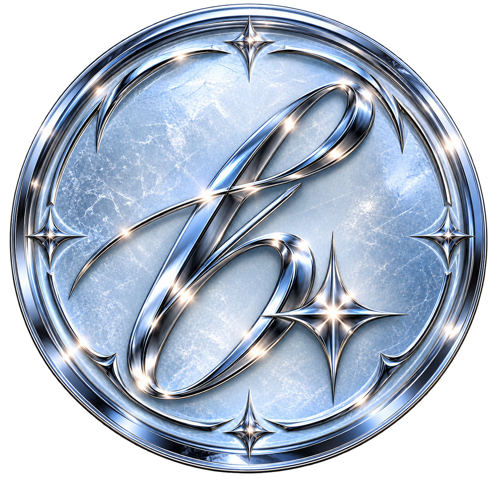
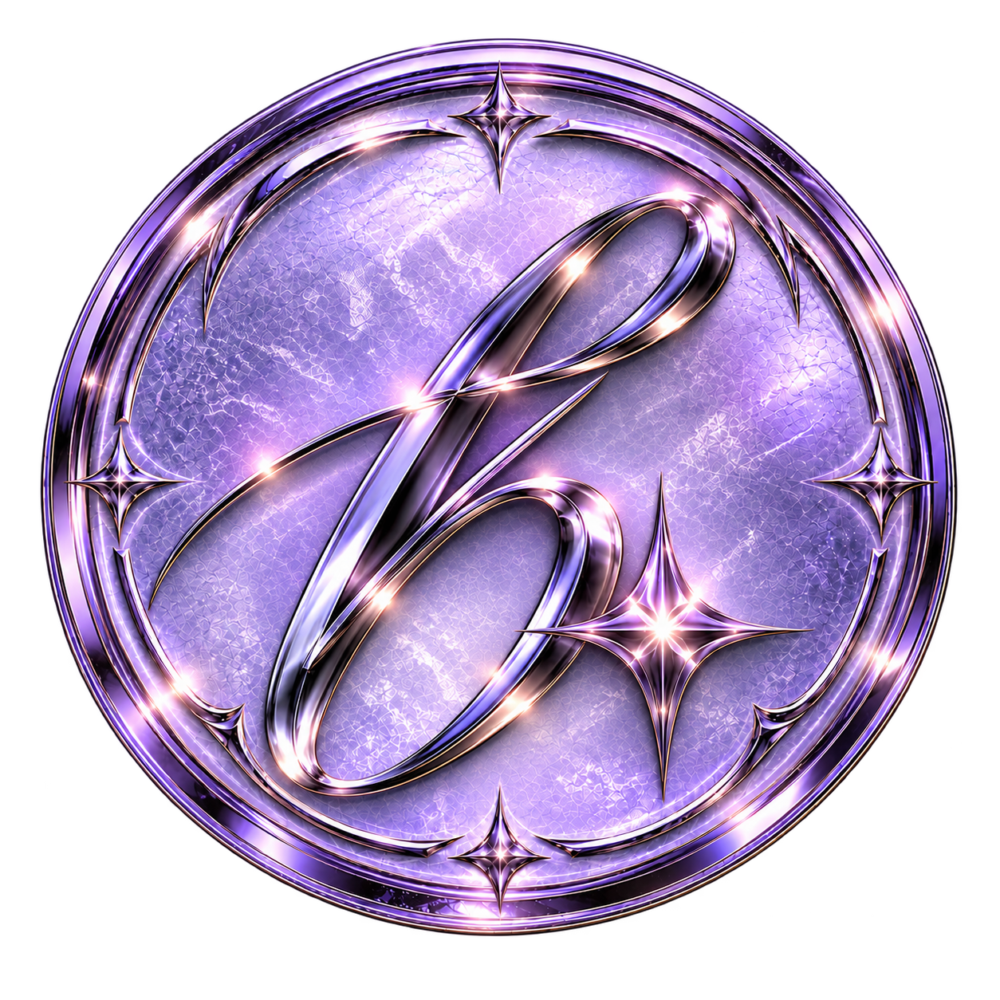
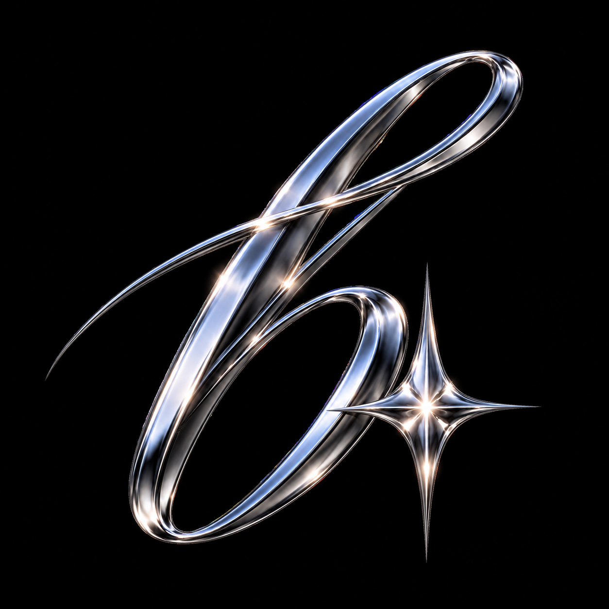
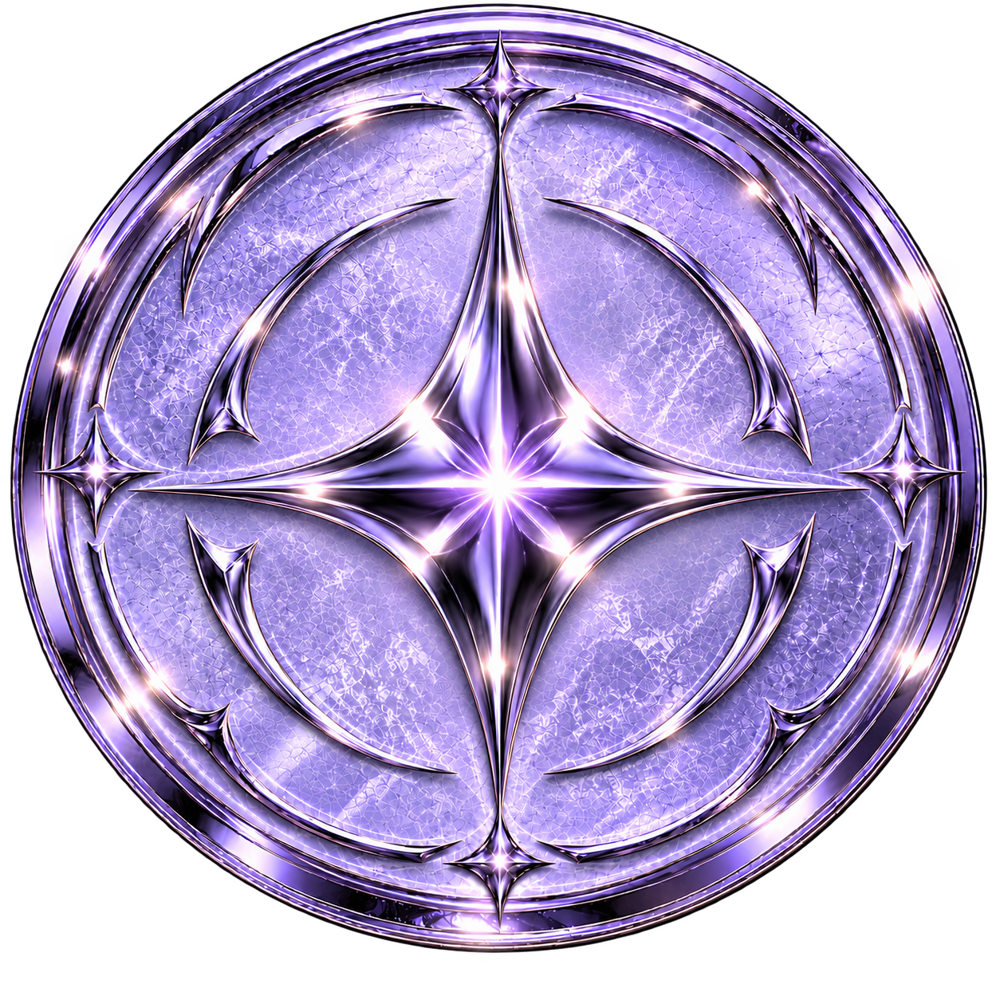
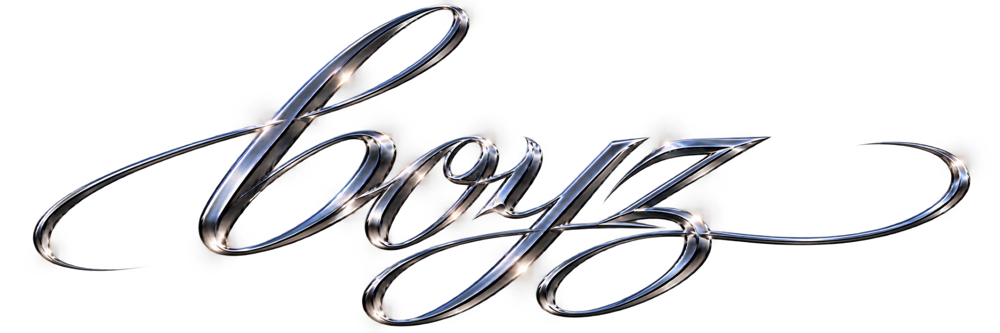

PRETTY. POPULAR. PROBLEMATIC.
Você pode ser
quem quiser.
Mas seja o melhor que puder ser.

ICE / BLUE / PRESENCENão existe um
tipo de boy.
Existe uma presença. BOYZ é uma fraternidade masculina construída para homens que entendem que estilo, personalidade e ambição também são formas de identidade.
Vaidoso, elegante, extravagante, atlético, artístico ou impossível de classificar — cada boy traz uma assinatura própria.
CONHECER O CONCEITO →Antes de existir
um nome,
existiu uma atitude.
Uma geração cansou de escolher entre ser respeitada e ser exatamente quem queria ser.
ENTRAR NA LORE →
THE FIRST BOYZ / 01PRETTY.
POPULAR.
PROBLEMATIC.



JOE
HILLS
Visão, presença e ambição. Um dos fundadores responsáveis por transformar uma atitude em uma fraternidade.

LOY
HILLS
Liderança, coragem e direção. A ambição transformada em movimento e identidade.

THE
ARCHIVE
A história ainda está sendo escrita.
THE FIRST MEMORY IS YET TO BE WRITTEN.Looks, noites, histórias e momentos que merecem ser lembrados.Liberdade
exige responsabilidade.
O código que mantém a liberdade de cada boy compatível com a identidade da fraternidade.
LER AS REGRAS →
Você acha que
pode ser um BOYZ?
Não estamos procurando uma resposta perfeita. Queremos conhecer você.
FAZER INSCRIÇÃO →